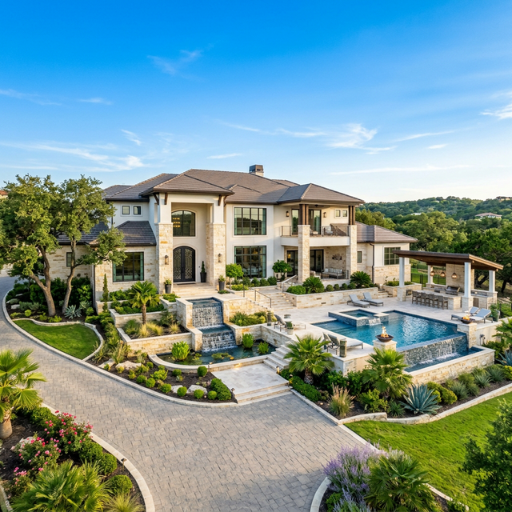

Find Your
Region
Our expertise spans the most coveted communities in Greater San Antonio, the Texas Hill Country, and beyond. Each market is distinct — and so is our approach within it.

San Antonio's most exclusive gated community. Guard-gated estates, golf, and a standard of living unlike anywhere in the region.

Historic prestige meets modern architecture. A coveted 78209 address with walkable lifestyle and established schools.

Ranches, acreage, and refined estates set against the rolling cedar hills of the Texas corridor.

A fast-growing Hill Country destination blending river lifestyle with sophisticated residential development.

North San Antonio's premier master-planned community featuring luxury custom homes and premier amenities.

Wine country estates, vineyard tracts, and heritage ranches in the heart of the Texas Hill Country wine trail.